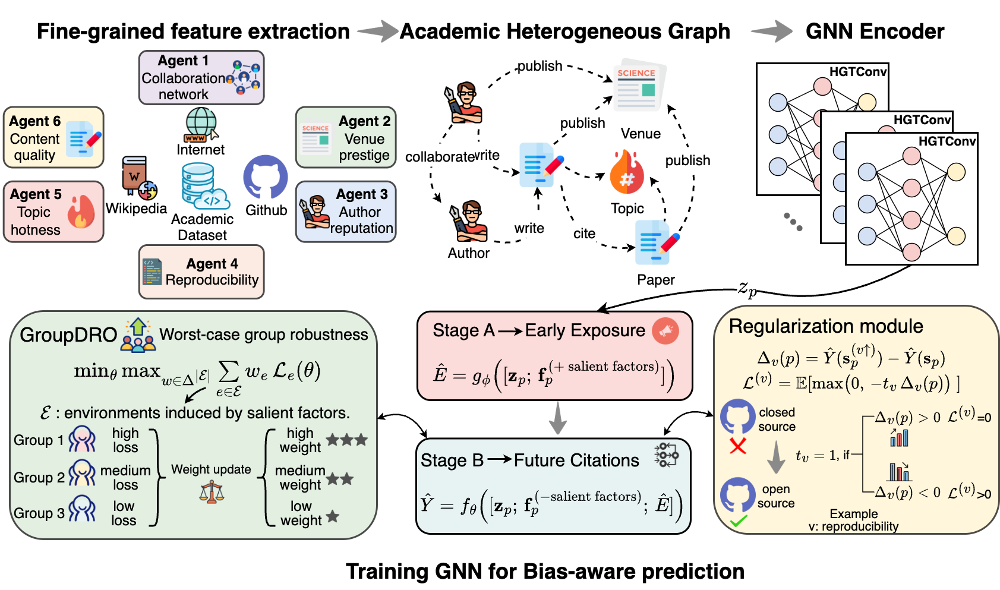
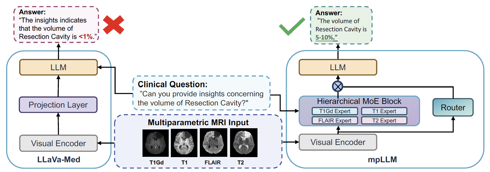
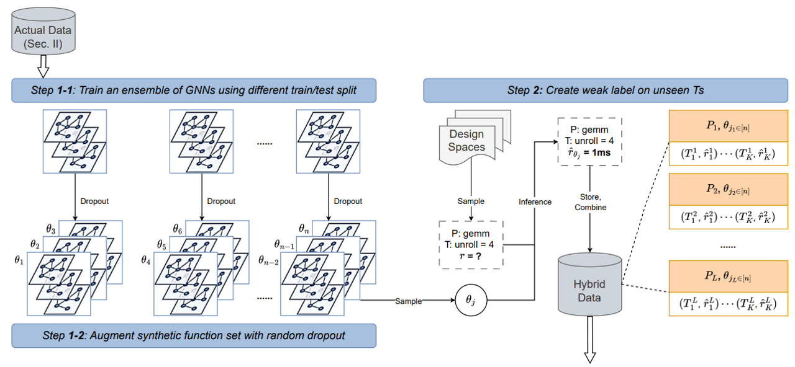
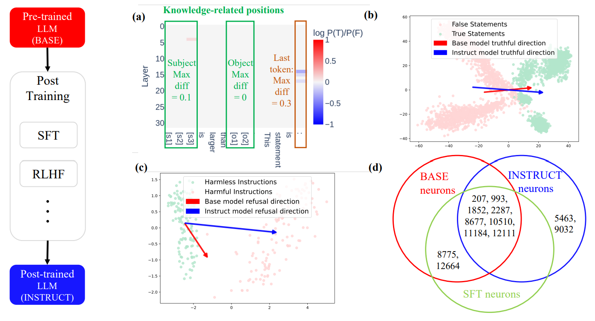
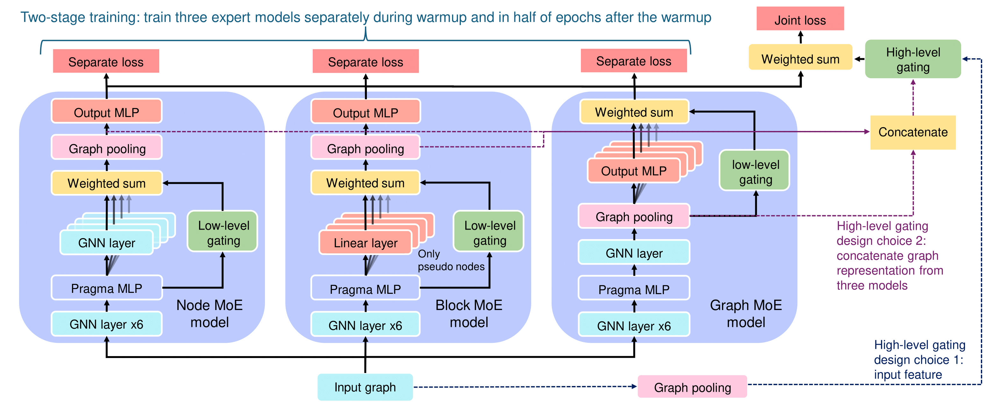
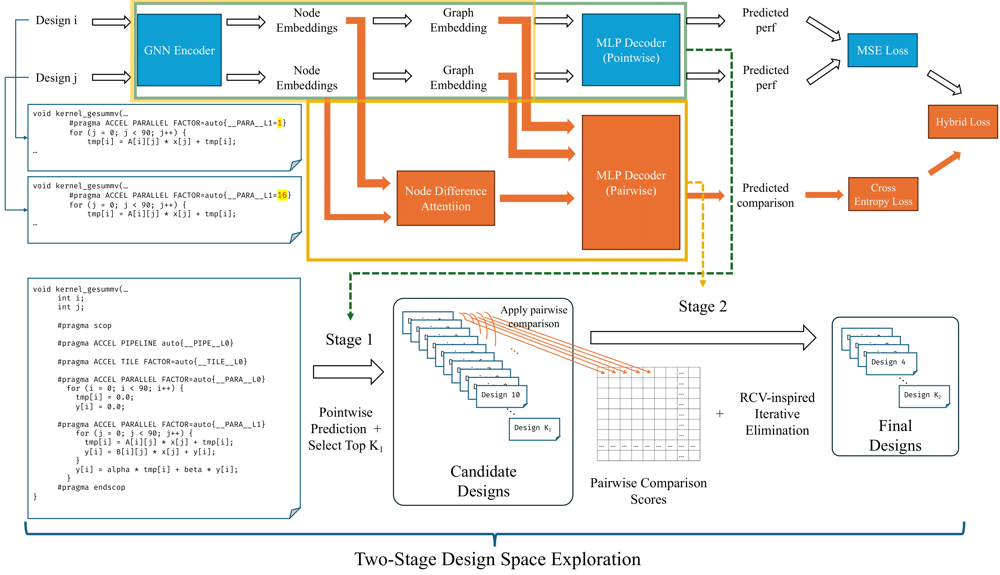
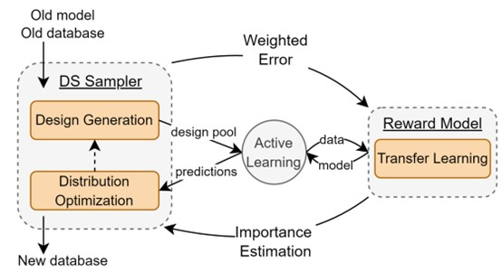
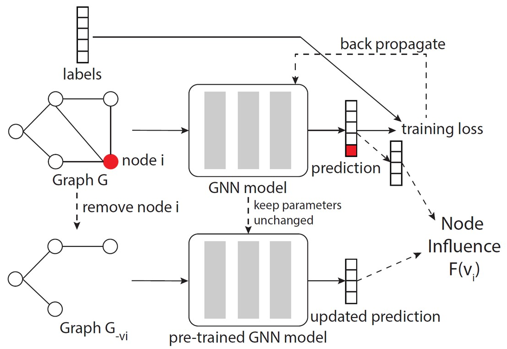
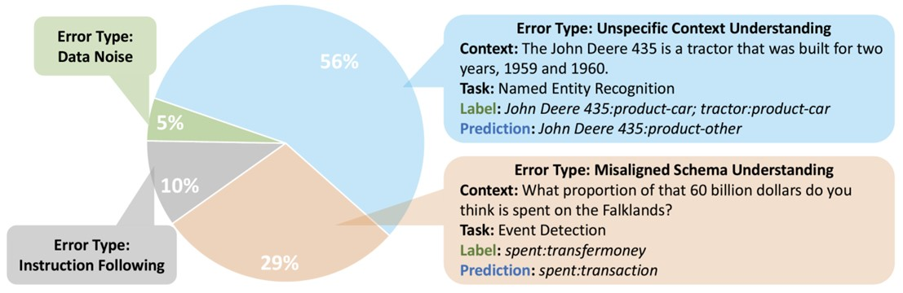
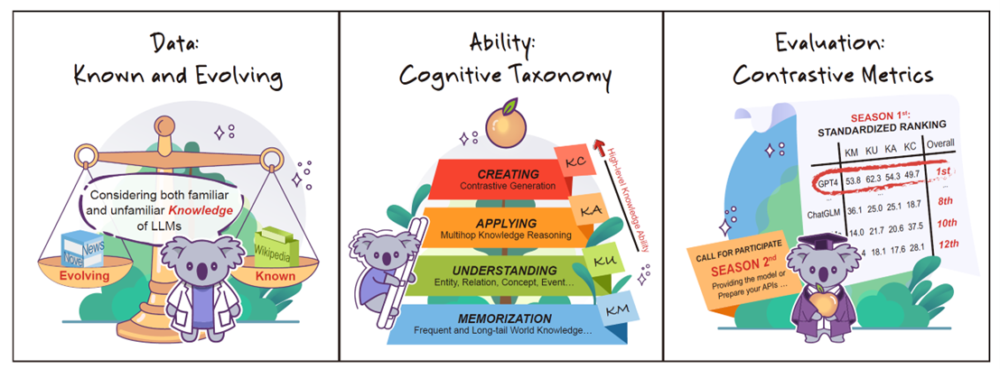

About (Download CV)
Hi! I am a Computer Science PhD student at UCLA, where I am fortunate to be advised by Prof. Yizhou Sun. I also closely work under Prof. Jason Cong's guidance. I obtained my bachelor's degree in Computer Science and Technology from Tsinghua University. During my undergraduate years, I was fortunate to be advised by Prof. Jie Tang, Prof. Yuxiao Dong, and Prof. Juanzi Li.
My recent research focuses on AI for chip design and AI models' interpretability, where the utilized AI models include Large Language Models (LLMs) and Graph Neural Networks (GNNs). Besides, I have broad research interests in LLMs and GNNs.
Education
UCLA, Los Angeles, California, U.S.
Computer Science
Tsinghua University, Beijing, China.
Computer Science and Technology
Internship Experiences
Published a paper on the efficient approximation of node influence based on GNN
Advisor: Prof. Yizhou Sun
Studied LLM-based GNN explanation; preparing to submit a paper
Manager: Xiang Song; Mentor: Han Xie
Publications and Manuscripts










Selected Awards & Honors
- Amazon Trainium Fellowship, 2025
- Outstanding Graduate of Tsinghua University (top 10%), 2023
- Comprehensive Excellence Scholarship for junior year (top 10%), 2022
- Comprehensive Excellence Scholarship for sophomore year (top 10%), 2021
- Academic Excellence Scholarship for freshman year, 2020
- Runner-up in Tsinghua Innovation Competition, industry and technology track, freshman group, 2019
- First Prize in National High School Mathematics League, 2018
Academic Services
- Conference reviewer: ICLR 2024, ICML 2024, ACMMM 2024, NeurIPS 2024, LOG 2024, AAAI 2025, ICLR 2025, WWW 2025, ICML 2025, NeurIPS 2025, COLM 2025 Workshop, LOG 2025, ICLR 2026, WWW 2026
- Journal reviewer: IEEE TBD 2024, PLOS ONE 2024
- Conference volunteer: NSF AI for EDA Workshop 2024
Teaching
- Teaching Assistant of CS 31: Introduction to Computer Science I, UCLA (2024 fall, 2025 winter, 2025 spring)
- Teaching Assistant of CS 97: Introduction to Data Science, UCLA summer school for high school students (2024 summer)
Miscellaneous
- I love badminton, singing, traveling, and enjoying beautiful landscapes.
- 🎤 I have been a member of Tsinghua University's choir and UCLA's choir.